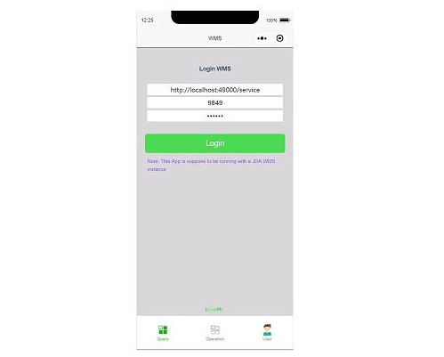

Read Our Expertise

Over 11 Years experience
by Sam Ni / JDA WMS / 20 Nov. 2019Worked on JDA WMS from RedPrairie since 2008
Learn More
WMS Trace Digger
by Sam Ni / JDA WMS / 20 Nov. 2019Trace Digger is for investigating MOCA trace, as well as RF Device trace.
Learn More

WMS Client Mini Program
by Sam Ni / JDA WMS / 20 Nov. 2019A beautiful GUI developed on phone with WeChat mini program.
Learn MoreGet in touch
Want to know more? let's get in touch